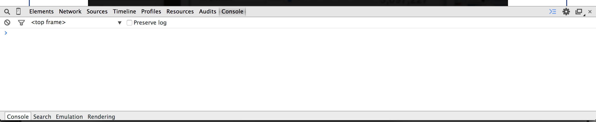
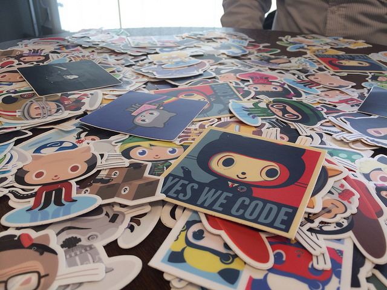

Code Camp
Learning the basics of real code
Code Camp is a workshop series hosted by the Dining Philosophers at the University of Pennsylvania to teach students real-world coding skills from scratch. These workshops are highly interactive and offer participants a lot of support in the form of mentors that help as participants code.
These workshops have been organized by the Dining Philosophers with the help of many talented individuals. Individual workshops will be credited to the people that made and ran them.
Intro to jQuery
with Cathy Chen and Joe Farned
This workshop was held on November 22th, 2014. See the powerpoint slides for the workshop here;
To install
- Sublime Text
- Google Chrome
What is jQuery?
jQuery is a fast, small, and feature-rich JavaScript library. It makes things like HTML document traversal and manipulation, event handling, animation, and Ajax much simpler with an easy-to-use API that works across a multitude of browsers. With a combination of versatility and extensibility, jQuery has changed the way that millions of people write JavaScript. (http://jquery.com/).
It basically let’s you select certain HTML elements and do cool things with them! Brush up on what HTML is here.
Playing around in the Google Chrome Javascript Console
What is the Javascript Console? It’s a cool tool on Chrome that you can use when developing. You can pull it up by clicking the menu on the top right of the browser and going down to More Tools > Javascript Console. It looks like this:

To get acquainted with jQuery and Javascript, it’s a great idea to play around with websites using the console! It allows you to inject bits of Javascript code into the website so you can see whatever changes you make live. (Make sure the website you’re playing around with has jQuery enabled like this one.)
Things you can try:
// changing the css of the area $("[HTML SELECTOR]").css("color", "red"); // adding event listeners so you can change the area when you do something to it (mouseclick) $("[HTML SELECTOR]").on("click", function() { $("[HTML SELECTOR]").css("color", "blue"); }); // the cool thing about jQuery is that you can click one area of the page and have something happen to a totally separate section of the page
Navbar Demo
You can use jQuery to make your menus interactive. Here’s a simple example of a dropdown navbar you can make with jQuery.
Let’s start by seeing how it will look when we’ve finished!
The Starting File
We’ll be giving you a small template to work with! All the CSS styles and HTML markup has been done for you so all you need to do is add the Javascript/jQuery between the “script” tags!
Opening the SubMenu
First let’s add an event listener to the button:
$('.myMenu > li').bind('mouseover', openSubMenu);
This calls the function “openSubMenu” when you mouse over the menu button.
Now let’s create the function “openSubMenu”:
function openSubMenu() { // changes the visibility of the submenu to visible $(this).find('ul').css('visibility', 'visible'); };
Now when you hover over the button it should drop down! But the problem now is that it doesn’t close when you leave the button.
Closing the SubMenu
Let’s add another event listner to the button:
$('.myMenu > li').bind('mouseout', closeSubMenu);
This calls the function “closeSubMenu” when your mouse leaves the menu button.
Now let’s create the function “closeSubMenu”:
function closeSubMenu() { // changes the visibility of the submenu to hidden $(this).find('ul').css('visibility', 'hidden'); };
Now when your mouse leaves the sub menu will disappear.
Hadouken Animation Challenge
For some practice, let’s build an animated Street Fighter using the jQuery we have learned. The original tutorial can be found here.
Let’s start by seeing how it will look when we’ve finished!
Download the file
Let’s start by downloading a file to get us started here. This file (fighter_before.html) is a basic HTML file. We’ve already included the line:
<script src="http://code.jquery.com/jquery-1.11.0.min.js"></script>
in the header. This imports the jQuery library into your file.
Use jQuery to add the starting image
Our ‘body’ right now has only on one ‘div’ which is ‘#my-div’. We will start by adding the image to this div by adding the following code right below the ‘/ Add your code between here /’ comment:
$('#my-div').html('<img src="http://i.imgur.com/90Mmdcm.png">')
This adds the following ‘HTML’ under my ‘#my-div’:
<img src="http://i.imgur.com/90Mmdcm.png">
Now, when you open your ‘before_fighter.html’ in your browser, you should see Ryu.
Add the first animation
We want Ryu to get ready to fire when we hover our mouse over him. To do this, we use jQuery to select the image. Add the following code:
$('#my-div img').hover( function() { this.src = 'http://i.imgur.com/nTj3Fxx.gif' }, function() { this.src = 'http://i.imgur.com/90Mmdcm.png' })
The first function says we should replace the current image with the one at ‘http://i.imgur.com/nTj3Fxx.gif‘ when we hover the image. The second function tells us what image to use when we move our mouse off the image. Putting them together, we get a nice animating.
{kind=link}
Make Ryu shoot: first step
When the user clicks on Ryu, we want him to hunch down and appear as if he’s shooting. To do this, we use the jQuery ‘mousedown’ function. ‘.mousedown’ is called when we click on the image. Add the following line:
$('#my-div img').mousedown( function() { this.src = 'http://i.imgur.com/Rfj0a80.png' })
Now, the image we added earlier will be replaced by the new image of Ryu hunched down. As soon as we’re done clicking (which is pretty much instantaneous), we want to revert back to the image of Ryu we started with. To this, we use the mouse-up function, which is not much different than the ‘.mousedown’. It’s just called when we finish clicking. Add the following line:
$('#my-div img').mouseup(function() { this.src = 'http://i.imgur.com/90Mmdcm.png' })
Make Ryu shoot: second step
Now, we’re going to add in the Hadouken - what Ryu shoots. To do this, we realize that when we click, we want a new image - of the Hadouken - to be added to screen.
In fact, we just saw an example of how to get a click event - the ‘.mousedown’ function! Let’s use it again. This time, we’ll add a new image to ‘#my-div’. Add the following code:
$('#my-div img').mousedown(function() { $('#my-div').append( '<img class="shooting-space" src="http://i.imgur.com/oTyQRvX.gif">' ); })
We give our image the class ‘shooting-space’ so that we can modify it in the next step. This will make sense in just a second.
Make Ryu shoot: third step
Here’s where the real magic occurs. We’re going to use the jQuery animate function. We’ll explain it here, but you can also read the docs for a good idea of what it does.
First, we notice the ‘.mousedown’ function below, which will look familiar. When we click Ryu, the followingn code will execute. Go ahead and add it to your file:
$('#my-div img').mousedown(function() { $('.shooting-space').animate( { "margin-left": "600px" }, 1000, 'swing', function() { this.remove(); }) })
the ‘.animate’ function will, well, animate the Hadouken. Let’s break it apart. First,
"margin-left": "600px"
tells us that we are going to slowly add a margin (space) to the left of the Hadouken image. In fact, we want it to take
1000
milliseconds to slowly add this margin. The ‘swing’ part tells jQuery to ease in and out. We could have instead used ‘linear’ which would not ease in and out. Finally, the last function says what the code should do when the animation is finished - in this case, remove the image of the Hadouken.
Make sure it’s working
To check your final product, you can download a finished version here.
Intro to Git and Command Line
with Brynn Claypoole
This workshop was held on October 25th, 2014.
Installing Git
Start off by getting ready to use Git via command line. You can find downloadable versions here. You may already have git installed: If you have a Mac/Linux machine, search for the “Terminal” application, then type “git” and hit enter. If it doesn’t say “command not found”, you should be good! Windows users should search their applications for “Git Bash”.
What is command line?
Have you ever seen programmers, maybe in class, in the computer lab, or on TV, typing into a black box on their computer screens?
That box is known as a command line. Command line is a less visual way of interacting with your computer. In some ways, it’s like a “Finder” window. It allows you to open files and navigate through your directories. It’s also the interface for interacting with your computer in more complicated and technical ways. You can run processes and programs, ping Internet servers, and do a whole host of other things that require some technical knowledge.

This is what command line looks like on a Mac.
On Mac and Linux computers, you can access it by searching for the “Terminal” program. In Windows, it’s called “Command Prompt”. Be careful, because the languages used on these different operating systems are different. Macs use Unix, which is extremely similar to Linux. Windows machines have their own command prompt language that uses different syntax from Unix/Linux.
There are some basic commands you should be able to use:
ls(DIRon Windows) lists all the files in the current folder.cdallows you to change directories. For example,cd Documentswill move into the folder “Documents”, if there is such a folder in the current directory. You can usels(DIRon Windows) to check that your current folder contains “Documents”.mkdirallows you to make a folder. Somkdir Newmakes a folder named ‘New’.mv(moveon Windows) will let you move files and folders. In Terminal you can domv ~/Desktop/MyFile.rtf /Volumes/Backup/MyFolderto move MyFile.rtf. On Windowsmove c:\windows\temp\*.* c:\tempwill move everything from C:\windows\temp to C:\temp.
Command line has some funky syntax that you’ll need to get used to:
So…I’m lost.
Understanding how to navigate in your command line can be weird if you’ve never done it before. I recommend moving around folders in command line while clicking around a Finder window. Perhaps start in your home directory (frequently represented with ~) and move into your Documents folder, both on command line and in Finder.
What are all of these dots for?
Dots can be used as shortcuts for certain commands. . is a shortcut referring to the folder you’re currently in. .. is the folder that contains the folder you’re currently in. For example, if you’re currently in a “Git Code Camp” directory within a “Fall 2014” folder, . would refer to “Git Code Camp” and .. to “Fall 2014”.
Regex sounds like a medication.
It’s not. Regex stands for “regular expression”, which is a notation typically used for searching. You mainly just need to worry about the *, which means “anything that looks like this”. For example, if you’re trying to move all .txt files in a folder, you can do it without manually moving each one. Just type in *.txt, and your command will apply to every file in that folder with a .txt ending.
Command line gets kind of tedious…
Yeah, we noticed. There are a few shortcuts you can use to make your terminal experience significantly more pleasant. You can frequently hit tab to autocomplete commands or file names. You can also use the arrow keys to move through your command history. For example, the up arrow replaces your current command with the one before it.
What is Git?
Git is a beautiful gift from the heavens that helps us with something called source control. Imagine (or think back to) a worst-case situation: You’ve been working on your code for hours and hours. It was kind of working twenty minutes ago, but you need to fix a couple things to get it working. This time, when you try running it, nothing works! You’ve changed a lot of different things in twenty minutes and have no idea what broke it. You’d really like to just go back to the version you had twenty minutes ago, but there’s no easy way to do that.
Git is essentially a language (or group of concepts and commands) for fixing this problem via source control. In short, you save snapshots of your code (called commits) from different points in time. One project and all of it’s versions are stored in a repository, or repo.

And Github?
Github is the online tool for using Git. You can:
- Quickly save commits in repos online (so you don’t lose good work or eat up memory on your computer).
- Work collaboratively with peers on class, work, hackathon, or outside projects.
- Create a profile of projects to show off to employers.
- Find open source projects you think are interesting and contribute.
Most importantly, Github has an adorable mascot named Octocat (in the logo above). They have dozens of unique and fun stickers with different versions of Octocat that coders treasure like gold.

When working with Git and Github, it’s easiest to imagine that your code is being stored in two different places: locally, on your own computer, and remotely, on Github’s servers (the alias for that location is origin). Generally, you edit code on your computer, create a commit (snapshot), and send it to the Github servers. Github stores all previous versions of your code.
Basic Git Commands
Cloning: When you clone a repository, you take all of the code from a repo and create a local version of it on your computer. This is generally how you get code off of Github so you can actually edit it. To clone a repo, try: git clone (HTTPS address of online repo), like:
//Clone a repo called "node-basic" from user "bclay" git clone https://github.com/bclay/node-basic/ //Go into the repo cd node-basic
Forking: Forking allows you to copy the entierty of someone else’s repo onto your Github account online. You still need to clone it (from your account) to get the code on your computer. You can fork a repo by clicking the “Fork” button on a repo’s Github page.
Committing: As stated above, committing is taking a snapshot of your code to be saved. Before you commit, you always need to do git add . first. “Adding” is commonly explained as “staging your changes to be committed”. You don’t really need to know what that means, just do it before you commit. To commit, type in git commit -m ‘some message’.

Pushing: Pushing is simply sending code to your repo on Github. See below for the full process you should go through every time you send code to Github:
//Stage changes git add . //Commit current code git commit -m 'Updated CSS' //Push your code to Github (origin) at the master branch git push origin master
Pulling: The expected opposite of pushing is pulling. You type git pull every time you need to get code from a repo you’ve already cloned off Github. When working with other coders, it’s good practice to pull every time you begin working on code.